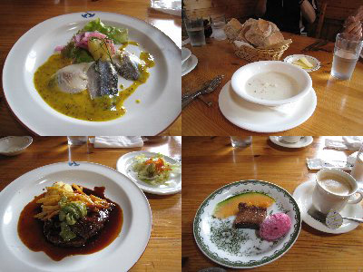
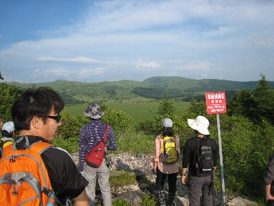
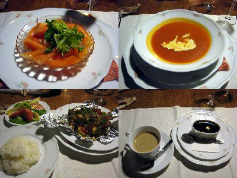
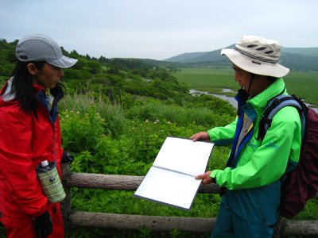
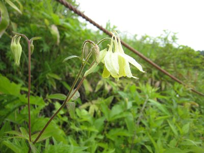
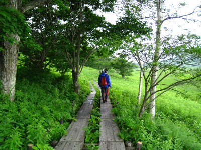

ヒュッテに泊まって湿原散策 | 2010年7月 幹事：Ryuu |
|---|---|
|  「ガムラスタン」での昼食 |  鷲が峰ひゅって の門番君 |
| 今年も山に行こう！ と言う企画から、美ヶ原良いね〜って話になり、美ヶ原に近い「鷲が峰ひゅって」に宿を取った。 宿を取ったところ、その週末はガイド付きツアーを予定しており参加しないか。と、宿からお誘いがあったので、今回の一泊ガイド付き湿原散策ツアーとあいなった。 普段なら山小屋に泊まるところを、今回ヒュッテですから、ちょっと豪華？な企画となりました。初日は夕方から散策なので、静岡を遅めの出発。 お昼にビーナスラインの北欧料理「ガムラスタン」にて食事を。別に北欧料理を食べたかったわけでもないのだが、もうお腹が空いていて早く飯食わせろ状態だったわけで。 ここ、昼でもコース料理しかなく、1750円と昼飯にはちょっと高めかもしれませんが、これが美味しかった♪ 前菜はにしんのマスタードソース、スープ、サラダ、自家製ライ麦パンと、メインディッシュのハロンステーキ（メインはサーモンも選択出来ました）。 特にライ麦パン！ メチャ美味です！ 噛めば噛むほど味が出るって言うのかな〜 ホント美味しいんです。ライ麦パンの軽めランチが有っても良いよな〜 昼から贅沢してお腹いっぱいです。 | |
|  サンセットウォーク |  後方に八島湿原が |
| 白樺湖を抜けて、ビーナスラインの高原を気持ちよく走りながら、鷲が峰ひゅって15時頃に到着。 鷲が峰ひゅっては、山小屋風の小さいけど、色々凝ってるお宿です。八島湿原の直ぐ隣です。廻りに建物は見当たらなくて（道路はあるよ）、木々に囲まれ、のんびりした感じです。 門に小人のオブジェが座っていたり（可動式）、食堂のテーブルには樹のランプ（可動式）、があったりと色々なオブジェで飾られていて、時間がゆったりと流れています。 一休みした後、夕方からサンセットウォークです。八島湿原横の鷲ヶ峰に途中まで登り、夕日と湿原を眺めよう〜ってツアーです。 天気はちょっと曇り、所々晴れてます。鷲ヶ峰を登っていくと、八島湿原を上から眺める感じになり、全体像が見えてきます。以外に大きいな〜 途中の草原から周囲を見渡すことが出来ます。風が心地いいです。双眼鏡で湿原を見たり、話を聞いたりしました。見晴らしのいい草原で、風を感じながら沈む夕日を見る。素晴らしいですね。（残念ながら夕日は雲に隠れて見えませんでしたが） 宿にもどり夕食。お昼をあれだけ食べたのに、動いたせいかお腹ぺこぺこです。夕食も豪華な「小さなコース料理」♪ フランス料理店で学んだというオーナーの腕が光ります。ワインを頂きながら、まったりとした食事の時間でした。 同席した若きご夫婦とも、なぜか静岡の話で盛り上がり楽しかった。 | |
 ついでにもう一枚 |  鷲が峰ひゅって の夕食 |
| 翌日、カッコウの鳴き声が聞こえる静寂な朝。天気はちょっと悪そうな曇り。雨はまだだけど、降りそうな感じです。 朝食に焼き立てパンを頂き、ハイキングの支度をして八島湿原に出発。 八島湿原は、普通に歩けば1時間半位で一周出来ちゃうけど、本日はガイドさんの説明を聞きながら、ゆっくりと廻ります。 そう言ってる間に雨がパラパラと。とりあえずレインコートを着て、ザックにはカバーを掛けてゆっくりと湿原を時計回りに出発。 ガイドさんの説明は、湿原の成り立ちから花の説明、環境問題、鹿問題とさまざま。この湿原も1万2千年かかって出来てるんだね〜 1万2千年前って、人はどうな生活していたのかな？ 私も湿原ってものが分かっていなかったので、いろいろ教えてもらい勉強になりました。（いつまで覚えているかは疑問） 花も、たぶん自分達で廻っていたら見落としていたか、「ふ〜ん」で済ませていたことでしょう。ニッコウキスゲにはちょっと早かったけど、色々を見ることが出来ました。 | |
|  湿原のレクチャーを受けてます |  オダマキ |
| 時々パラッと降る雨のおかげで、熱くもなく涼しい感じで散策出来ました。また、他の観光客が少ない。日曜なのにですよ。小降りでも雨降ってるから一周しないのかな。 お陰でゆっくりと見ることが出来ました。湿原のしっとり感も十分味わえたしね。 お昼は湿原周回コース途中の、ヒュッテ御射山(みさやま)でカレーライス。 湿原も見る場所により、さまざまな景色が見られます。微妙に違うんだよね。 ゆっくり廻って15時にヒュッテに戻りました。本当ならここで、反省会と言うお茶会があるのだけど、私が夜に仕事が入ったため、同じ車の人たちはここで帰路に着きました。 帰り始めたら、雨が結構本降りになり始めました。ぎりぎりセーフ！ ガイド付きのツアーって、あまりやったことないけど、勉強になるし、新たな視点から見ることが出来て良いですね。鷲が峰ひゅってものんびり過ごせる宿で、今度は冬にでも行きたいな。 | |
 湿原っぽい感じに写ったかな |  こんな感じの木道を歩きます |
| 写真：べっしー＆たかにぃ コメント：べっしー | |